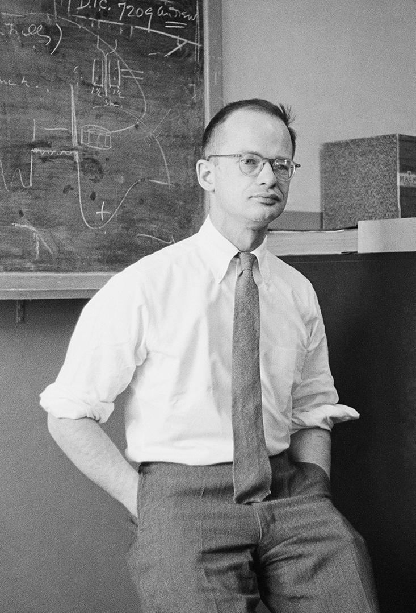
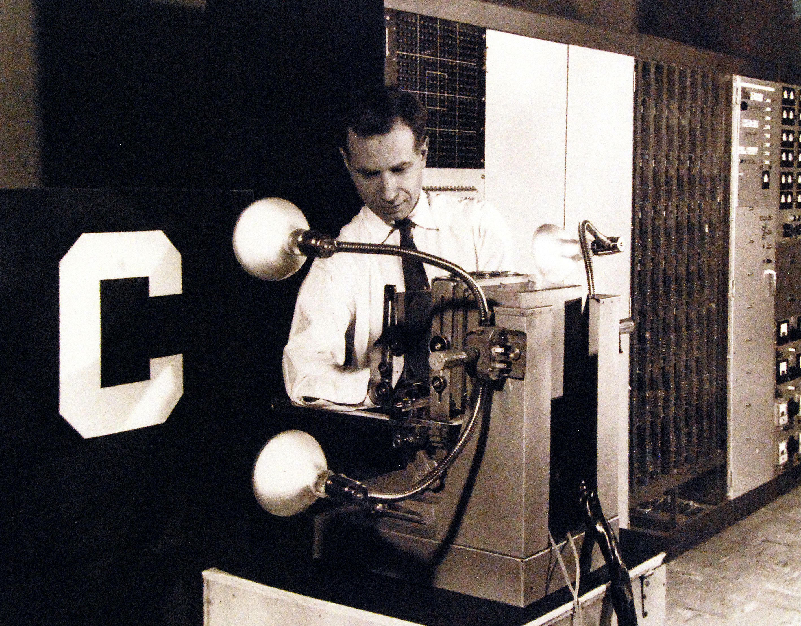
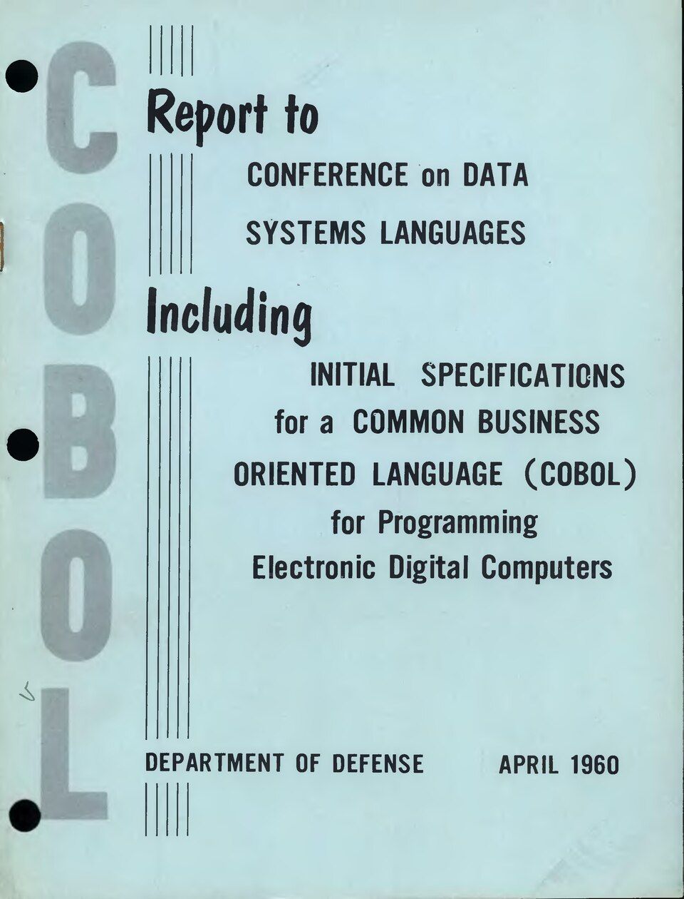
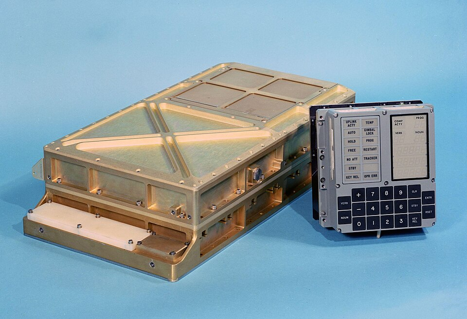
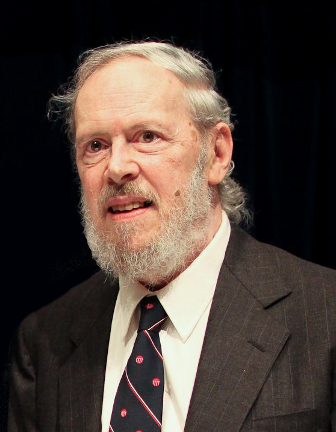
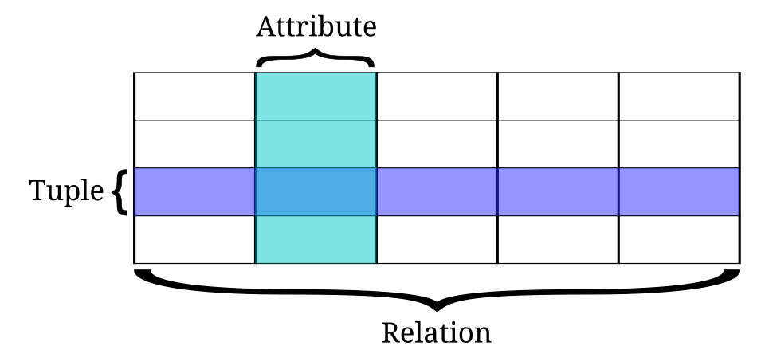
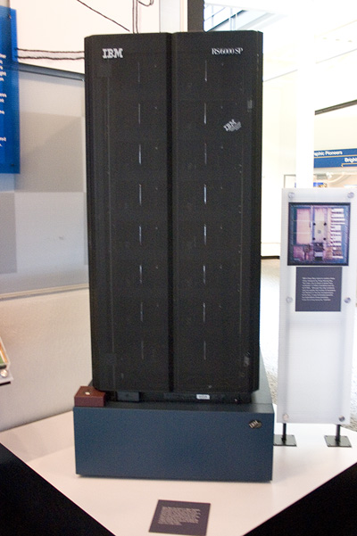
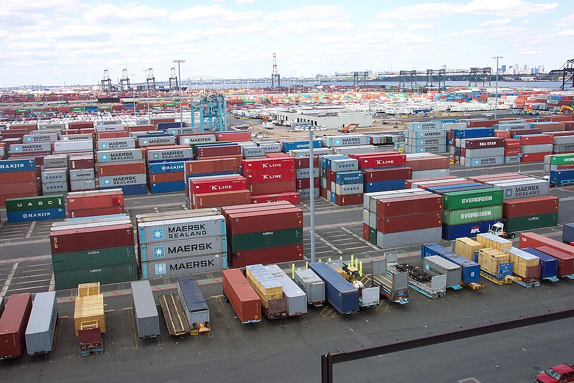
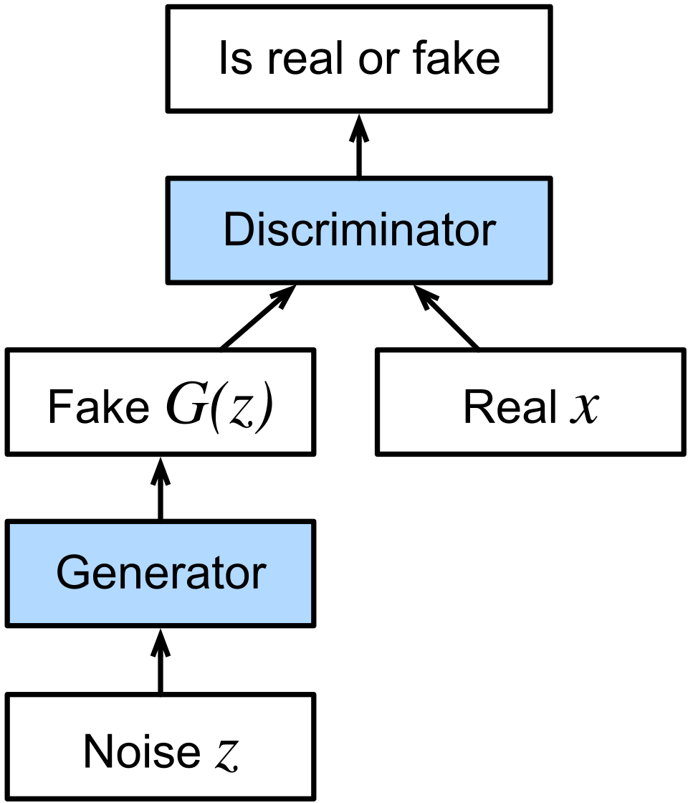

The timeline, cause by cause
Over 180 years of computing history, oldest first. Each milestone is coloured by the floor of the tower it belongs to — and for almost every one, there is a real need that forced it into existence. The army needed firing tables; the phone company needed a reliable switch; the air force and NASA needed computers small enough to fly. Read the "why" lines: that is where the story lives.
The Pioneer Era (1843–1956)
From the first mechanical algorithms to the math of universal computers and initial learning machines.
Lovelace's Algorithm — the first computer program
Ada Lovelace writes the first algorithm designed to be carried out by a machine, recognizing that computers could manipulate symbols beyond numbers, including music and art.

Boolean Algebra — the logic of 1s and 0s
George Boole publishes a mathematical system of logic where variables can only have two values: True (1) or False (0), combined using operations like AND, OR, and NOT.

Frege's Formal Logic
Gottlob Frege publishes Begriffsschrift, introducing first-order predicate logic with quantifiers and formal proofs.
Floor 1The Hollerith Tabulator — the birth of automated data
Herman Hollerith designs an electromechanical tabulating machine that uses punched paper cards to record and count census data.

The Vacuum Tube
Lee de Forest invents the triode vacuum tube (Audion), the first electronic component that can amplify electrical signals and act as a high-speed switch.
Floor 2Gödel's Incompleteness
Kurt Gödel proves that any consistent formal mathematical system contains true statements that cannot be proven within the system.
Floor 1Turing's Paper Machine — the math that begot code
Alan Turing designs an abstract mathematical machine that reads and writes symbols on tape, proving a single machine could perform any possible calculation.

Lambda Calculus — the other half of computation
Alonzo Church invents a tiny symbolic language where everything — numbers, logic, even whole programs — is built from nothing but functions that take a function and return a function.
Floor 1Shannon's Logic Gates — bridging math and switches
Claude Shannon proves that electric relays and switches can physically implement Boolean logical operations, establishing digital circuit design.
Floor 2McCulloch-Pitts Neuron — computing with biological logic
Warren McCulloch and Walter Pitts publish a mathematical model of a simplified biological neuron, showing it can calculate any logical function.

Colossus — codebreaking in wartime
Tommy Flowers designs Colossus, using vacuum tubes to decipher encrypted telegraph messages at electronic speeds.

ENIAC — electricity replaces human calculators
The world's first general-purpose electronic computer is built: a 30-ton giant containing 17,468 glowing vacuum tubes, computing 5,000 additions per second.

The Stored-Program Concept — putting code in the pantry
John von Neumann proposes storing program instructions in the same memory as data, allowing the machine to be reprogrammed in seconds.

The Transistor — the solid-state revolution
Bell Labs physicists create the first transistor, a solid-state switch made of silicon that replaces hot, fragile vacuum tubes.

Information Theory — measuring the invisible "bit"
Claude Shannon proves that all human communication can be boiled down to binary 'bits' (1s and 0s) and transmitted perfectly over noisy wires.

The Turing Test — defining machine intelligence
Alan Turing proposes the 'Imitation Game' as a practical benchmark to answer the question, 'Can machines think?'

The First Compiler — teaching computers English
Grace Hopper designs a system that lets humans write code in English-like words, which the program automatically translates into binary.

Magnetic-Core Memory — the first true RAM
Jay Forrester's team threads a grid of tiny magnetic rings on wires, each ring storing one bit by its magnetisation — fast, reliable memory a computer can read and rewrite in millionths of a second.
Floor 2Dartmouth Workshop — naming "Artificial Intelligence"
A summer gathering of researchers coins the term 'Artificial Intelligence', establishing it as a new scientific field.

The Microchip & Silicon Era (1957–1974)
Shrinking physical gates onto pieces of rock, leading to OS, database, and network standards.
The Mark I Perceptron — the first learning neural network
Frank Rosenblatt builds the Perceptron, the first neural network machine that learns weights and associations from data.

FORTRAN — software for scientists
IBM releases FORTRAN (Formula Translation), letting engineers write mathematical equations like A = B + C instead of raw machine numbers.

LISP — the language of symbolic reasoning
John McCarthy designs LISP, introducing functional programming, automatic garbage collection, and recursive function logic.
The Integrated Circuit — carving circuits in stone
Jack Kilby and Robert Noyce independently find a way to place multiple transistors, resistors, and wires onto a single slice of silicon.

COBOL — standardizing business software
A joint committee defines COBOL, letting programmers write business software in simple, English-like syntax.

Minuteman & Apollo — funding the chip revolution
The US military and NASA buy integrated circuits in massive quantities, single-handedly funding the scale-up of chip factories.

IBM System/360 — software standardization
IBM launches a family of computers that all share the same instruction set, allowing software to run unmodified across different sizes of mainframes.

Moore's Law — predicting exponential chip scaling
Gordon Moore predicts that the number of transistors on a single silicon microchip will double roughly every two years.

Simula — the birth of Object-Oriented Programming
Ole-Johan Dahl and Kristen Nygaard release Simula, introducing the concepts of classes, objects, and inheritance to model physical systems.
The Mother of All Demos — glimpsing the future
Douglas Engelbart demonstrates the computer mouse, graphical windows, clickable hypertext, real-time text editing, and video conferencing in a single 90-minute demo.

ARPANET — the first node of the internet
Four university computers are linked together, successfully exchanging messages by breaking data into packets that find their own way across a network.

Unix — lean, modular operating systems
Ken Thompson and Dennis Ritchie create Unix, an operating system built on a simple philosophy: write small programs that do one thing well and chain them together.

The Relational Database — data in clean tables
Edgar Codd proposes organizing database records into simple rows and columns across linked tables, separating the database's logical structure from physical storage.

Email & the @ Sign — the network's first killer app
Ray Tomlinson sends the first message between two computers on a network, borrowing the lonely @ key to separate the user from the machine — user@host — an address format still used by billions today.
The Cook-Levin Theorem — mapping hard math limits
Stephen Cook and Leonid Levin formalize the class of NP-complete problems—thousands of incredibly difficult scheduling, routing, and optimization problems.
Floor 1Intel 4004 — the computer on a fingernail
Intel crams an entire Central Processing Unit (~2,300 transistors) onto a single silicon chip, marking the birth of the microprocessor.

The C Language — portable systems programming
Dennis Ritchie designs the C programming language, combining the close-to-hardware control of assembly with high-level readability and portability.

Xerox Alto — the first desktop workstation
Xerox PARC builds the Alto, the first computer designed with a mouse, graphical windows, clickable menus, local ethernet, and a bitmapped display.
TCP/IP & Ethernet — the universal network language
Bob Metcalfe invents Ethernet for local networks, while Vint Cerf and Bob Kahn design TCP/IP to route data across completely different networks.
SQL — standardizing relational queries
Donald Chamberlin and Raymond Boyce design SQL at IBM to access and manipulate data stored in relational databases.

The Personal & Connected Era (1975–2005)
Computers enter living rooms, networks activate globally, and the web makes it all visual.
The Personal Computer — moving to the living room
The Altair 8800 and the Apple II launch the home computing era, converting the microprocessor into a personal appliance.

Public-Key Cryptography (RSA) — trusting strangers
RSA cryptography uses prime numbers to create public and private key pairs, allowing secure data exchange over insecure lines without sharing a secret password first.
VisiCalc — the first spreadsheet, the first "killer app"
Dan Bricklin and Bob Frankston build a grid of cells that recalculates itself the instant any number changes — the electronic spreadsheet — and businesses suddenly have a reason to buy a personal computer.
Floor 7MS-DOS & the IBM PC — standardizing the desktop
Microsoft releases MS-DOS to power the IBM Personal Computer, standardizing the operating system layer for compatible desktop PCs.

The Internet Activates & DNS is Born
The ARPANET switches to TCP/IP on January 1, 1983, and the Domain Name System (DNS) is deployed to translate memorable names into numeric IP addresses.
Floor 4GNU Project — the free software foundation
Richard Stallman launches the GNU Project to write a complete Unix-compatible operating system that is free for anyone to use, share, and modify.
The Macintosh — computers "for the rest of us"
Apple launches the Macintosh, the first commercially successful personal computer with a mouse-driven graphical interface.

Backpropagation — training deep neural networks
Geoffrey Hinton and colleagues popularize backpropagation, a mathematical algorithm for training deep neural networks by propagating errors backwards through layers.
Floor 6The Morris Worm — network security awakens
Robert Morris releases the first major internet worm, exploiting vulnerabilities in Unix networks and shutting down 10% of the connected web.

The World Wide Web — a web of documents
Tim Berners-Lee designs HTML, HTTP, and URLs at CERN, creating a decentralized web of documents linked across the internet.

Python Language — code as readable as prose
Guido van Rossum releases Python, emphasizing code readability and clean syntax to make software development faster and more accessible.
Floor 5Linux — open source conquers the servers
Linus Torvalds releases the Linux kernel as a free, open-source project, which grows to run the modern cloud and supercomputers.

Mosaic — the web gets graphics
The NCSA releases Mosaic, the first popular web browser displaying images inline with text, sparking the 1990s dot-com boom.

SSL & E-Commerce — securing the web
Netscape introduces SSL, encrypting web traffic and enabling the first secure online purchases, launching the digital commerce era.
Java & JavaScript — interactive web pages
Sun launches Java for cross-platform server code, and Netscape introduces JavaScript to run code directly inside browsers.
Deep Blue defeats Kasparov — brute-force mastery
IBM's Deep Blue supercomputer defeats chess champion Garry Kasparov, searching up to 200 million board positions per second.

PageRank — mapping web relevance
Larry Page and Sergey Brin invent PageRank, sorting search results by counting how many other pages link to them.
Floor 5GeForce 256 — birth of the GPU
NVIDIA releases the GeForce 256, defining the Graphics Processing Unit (GPU) by shifting 3D math calculations from the CPU to a dedicated chip.
Floor 2MapReduce — parallel big data processing
Google designs MapReduce, allowing developers to process massive datasets in parallel across thousands of cheap computers.
Floor 5Git — decentralized software collaboration
Linus Torvalds designs Git, allowing decentralized version control and massive software collaboration.
Floor 5The Mobile & Cloud Era (2006–2016)
Renting elastic scale in the cloud, pocket-sized touch screens, and the neural network renaissance.
AWS — computing becomes a utility
Amazon launches EC2 and S3, letting companies rent computing power and storage on-demand over the internet.

The iPhone — pocket-sized mobile computing
Apple launches the iPhone, combining multi-touch screens, mobile internet, and a desktop-grade browser into a pocket computer.

CUDA — the GPU becomes a math accelerator
NVIDIA launches CUDA, a programming model letting developers write general-purpose math calculations on GPUs.

Android & the App Store — the mobile ecosystem
Apple launches the App Store, and Google releases Android, creating the mobile app distribution ecosystem.
Bitcoin & Blockchain — decentralized trustless ledger
Satoshi Nakamoto publishes the Bitcoin whitepaper, combining peer-to-peer networking and cryptography to create a decentralized database.
ImageNet — scaling AI training data
Fei-Fei Li and team release ImageNet, a massive database of over 14 million hand-labeled images to train vision models.
Rust Language — compile-time memory safety
Mozilla announces Rust, introducing compile-time memory safety checked strictly without a garbage collector.
AlexNet — the rebirth of deep learning
Alex Krizhevsky and Geoffrey Hinton train a deep neural network on GPUs to win the ImageNet competition by a massive margin.

Docker — OS-level containerization
Solomon Hykes and team release Docker, popularizing containerization by packaging applications with all settings into portable containers.

GANs — competitive deep learning
Ian Goodfellow introduces Generative Adversarial Networks, setting two neural networks to compete to generate realistic data.

Kubernetes — the cloud operating system
Google open-sources Kubernetes, an orchestration system to automate the scaling and management of containerized applications.
AlphaGo — mastering intuitive strategy
DeepMind's AlphaGo defeats Go champion Lee Sedol, using deep neural networks and reinforcement learning to evaluate board positions.
The Generative AI Era (2017–2026)
Transformers parallelize sequences, enabling massive language scale and local silicon accelerations.
★ The Transformer — parallelizing language
Google researchers publish 'Attention Is All You Need', introducing the Transformer architecture to process text sequences in parallel.

Scaling Up — the rise of large language models
AI labs scale up the Transformer architecture, showing that increasing size leads to emergent logical capabilities.
Floor 6GitHub Copilot — AI pair programming
GitHub and OpenAI launch Copilot, the first widely adopted AI coding assistant integrated inside developer text editors.
Floor 7ChatGPT — conversational interfaces for AI
OpenAI wraps a conversational chat interface around GPT-3.5, launching ChatGPT and democratizing access to LLMs.
Floor 7GPT-4 — multimodal scale
OpenAI releases GPT-4, a large multimodal model accepting both image and text inputs with human-level performance.

Agentic AI & MCP — software gets its hands
Anthropic open-sources the Model Context Protocol (MCP), creating a standard for AI models to connect to local files and APIs.
Floor 6DGX Blackwell — local supercomputing
NVIDIA ships Blackwell-based supercomputing clusters, bringing data-center-grade neural network processing directly to local scale.

Reasoning Models — inference-time compute scaling
AI labs introduce reasoning models (like OpenAI o1), which spend time 'thinking' before responding, scaling compute at inference time.
Floor 6